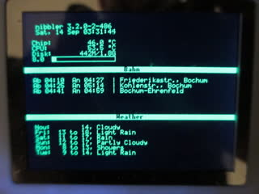
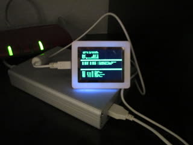

lcd4linux.conf – the lcd4linux config filedisk.py – small script to update the disk usageweather.py – uses the Yahoo weather API to display the weatherbahn.py – scrapes the Deutsche Bahn website to display train schedulesbahn_old.py – old version of the above scriptcrontab – updates train and weather info, restarts lcd4linux